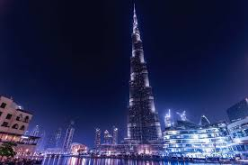
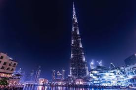

Ciekawe fakty o największych budynkach
Wiesz, że najwyższy budynek na świecie to Burdż Chalifa, który ma aż 828 metrów wysokości? Burdż Chalifa znajduje się w Dubaju i jest nie tylko najwyższą wieżą, ale również symbolem nowoczesnego budownictwa i architektonicznej doskonałości. Budowa Burdż Chalifa rozpoczęła się w 2004 roku, a zakończyła w 2010 roku. Wieżowiec posiada 163 piętra, a jego szczyt jest widoczny nawet z odległości kilkudziesięciu kilometrów. Jest to jeden z największych cudów współczesnej inżynierii.
 
